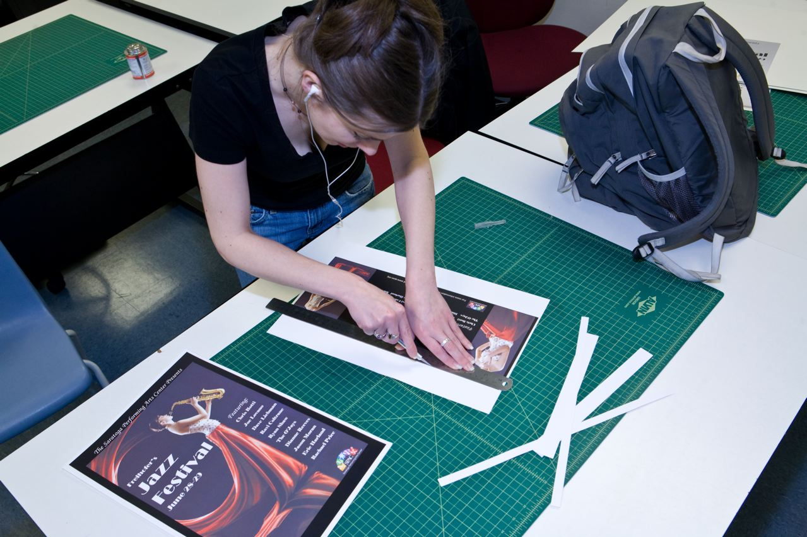

OVERVIEW
Small Classes
“Impersonal” simply isn’t in our vocabulary. At South Hills, you’ll never get lost in the crowd – or the shuffle. Our small classes allow for plenty of personal attention from your teachers. And our exceptionally responsive staff is here to answer all your questions and provide you with the tools you need to succeed.
Extraordinary Teachers
Any school is only as good as its teachers, and ours are truly outstanding. South Hills’ faculty have won awards for excellence in teaching for 6 of the past 7 years. And with their uncommonly deep experience working in the field, our teachers are great professional mentors, too.
Practical Curriculum
“No fluff; no filler!” That’s South Hills’ academic motto number one. “Learn by doing!” is number two. All our programs deliver the material you really need to know to launch a successful career in your chosen field. And we believe the best way to do that is through hands-on, project-oriented learning.
Career Placement
Our ultimate goal is to prepare you for fulfilling employment in your chosen field. Our dedicated Career Services staff will assist you to finding an appropriate internship at the end of your studies, and will continue to help you throughout your working life to find the best match for your skills and passions.
BUSINESS
South Hills offers three programs in the classic field of business,
all culminating in Associate in Specialized Business degrees:
Business Administration—Accounting
Business Office Specialist
HEALTHCARE

South Hills offers four career tracks in the rapidly-growing, rewarding field of healthcare.
Programs award Associate in Specialized Technology or Associate in Specialized Business degrees:
Health Information Technology
TECHNOLOGY
South Hills offers two options in the ever-expanding field of technology,
both culminating in Associate in Specialized Technology degrees upon graduation:
Health Information Technology
GRAPHIC ARTS
The South Hills Graphic Arts program prepares you for a lifelong career communicating visually…
through print, web, interactive and social media, illustration and more.
Two-Year Associate in Specialized Technology (AST) Degree Program
The South Hills Graphic Arts program prepares you for a lifelong career communicating visually…through print, web, interactive and social media, illustration and more.
You’ll begin designing from day one. Using state of the art software and resources, the Graphic Arts program will train you in typography, web design, logo design and corporate identity, packaging, publication design, advertising design, collateral design, color theory and more.
You’ll study the history of design, learning from the past while striding into the future. A small class size, low student-to-instructor ratio and a “no-fluff” curriculum ensure we will tap into your true potential and bring out your creative best!
The Graphic Arts program at South Hills is taught by faculty who are both seasoned educators and working professional designers, with experience in every facet of the field—from designing web sites, publications, annual reports, advertising campaigns, corporate identity, CD packaging and outdoor advertising to copywriting, packaging, art direction and videography.
At the end of the program, you will graduate with a versatile, well-rounded print portfolio and web site, ready to “hit the ground running” as you launch your career in the field of graphic arts.
Successful students in this program will be self-motivated and driven, creative, receptive to constructive feedback and have a strong work ethic.
CRIMINAL JUSTICE
The CJ program at South Hills will launch your career in the field of justice — from law enforcement to investigation to corrections to advocacy. Graduates of this program earn Associate in Specialized Business degrees.
Two-Year Associate in Specialized Business (ASB) Degree Program
The Criminal Justice program at South Hills will launch you on a career in the field of justice—from law enforcement to corrections to advocacy. The program is designed to be very hands on, combining theory with practice and application. The CJ program provides students with an understanding of the criminal justice system and the socio-economic factors that impact the field. As a South Hills Criminal Justice student, you will learn investigative techniques, basic security skills and the criminal legal process/procedures for the PA court system, as well as the basics of criminal and family law. Students even receive training to earn Oleoresin Capsicum Aerosol Training (OCAT - pepper spray) and Practical and Tactical Handcuffing (PATH) certifications.
Our Criminal Justice graduates are working in careers as Local and State Law Enforcement Officers and Deputies, Juvenile Justice Center Professionals, Corrections Officers, Private Security Guards, Loss Prevention Managers and Victim Advocates.
Successful students in this program will be ethical, hard working, willing and eager to learn, and believe in the criminal justice system and the law.
LIFELONG LEARNING
South Hills offers several opportunities for personal growth and professional development, or we can work with your company to develop custom training programs focused on your specific needs.
South Hills offers a variety of solutions for Lifelong Learning. We've got evening/weekend options such as workshops that will teach you a new skill or Professional Development classes that can keep you up-to-date on contemporary software and workplace skills. For more intensive training, our Continuing Education option allows you to take many of our daytime 10- or 12-week classes in a specific subject area.
If we don't already offer what you need, contact our Corporate Training specialists; they’ll help you customize a training program for your staff that can be held on-site or here in our classrooms.